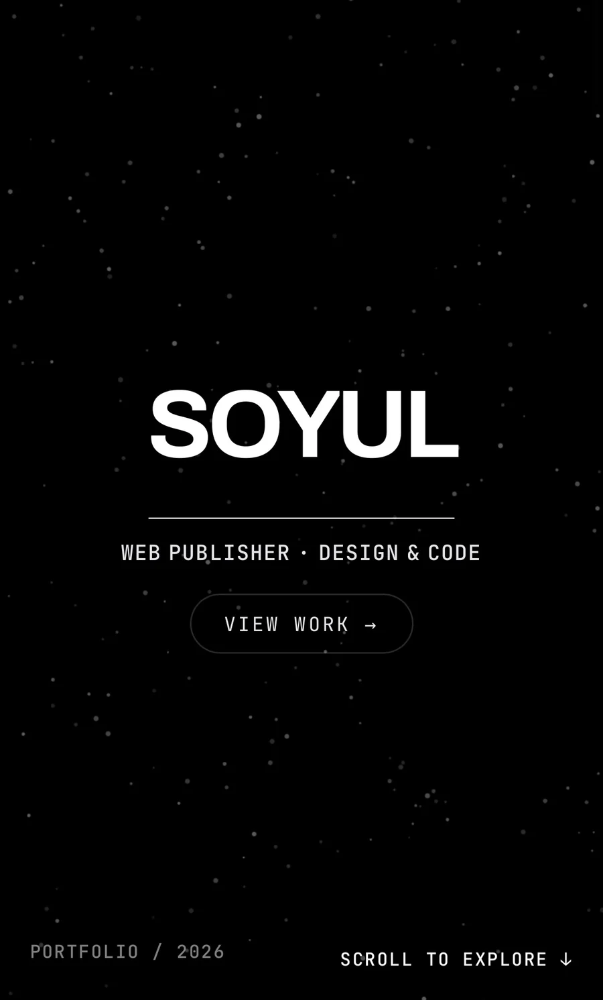
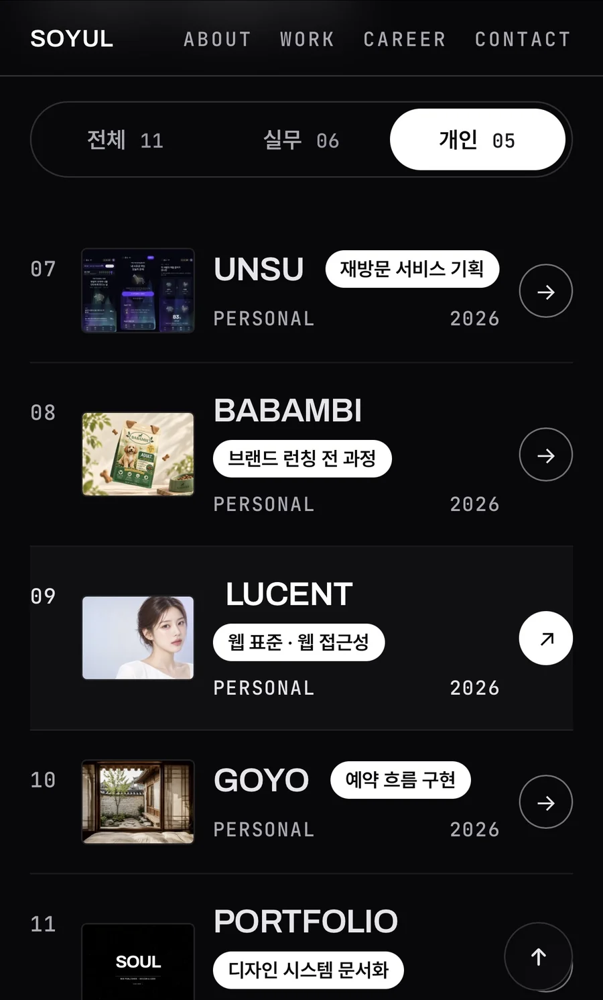
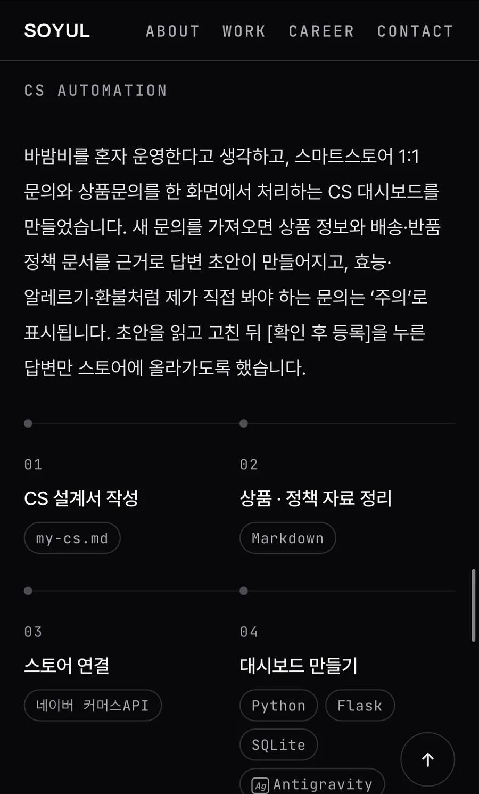
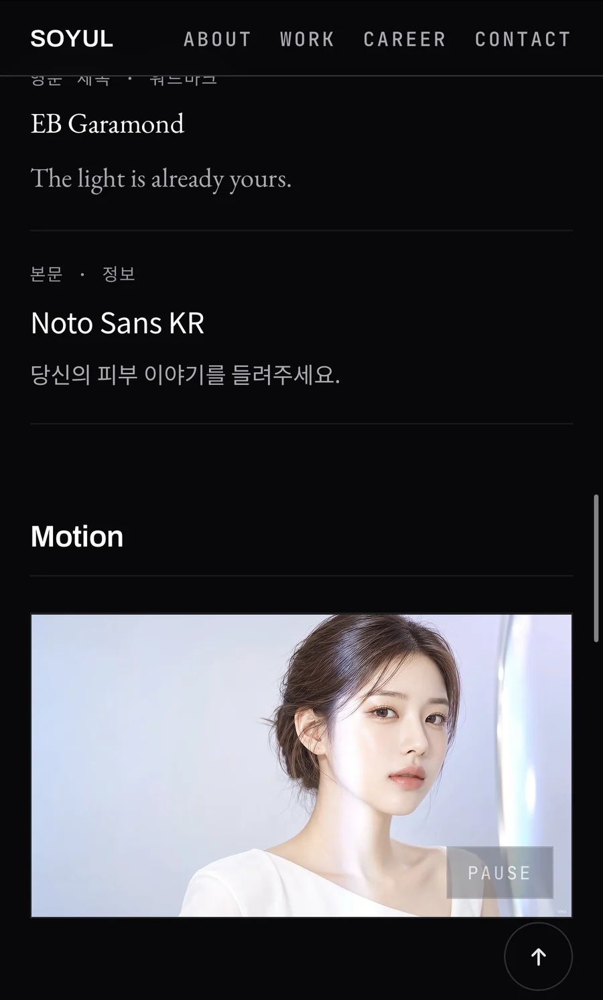

Overview
7년 실무와 개인 프로젝트를 한 사이트에서 보여주기 위해 만들었습니다. 작업물 이미지가 돋보이도록 UI는 무채색으로만 두고, 이 규칙을 DESIGN_SYSTEM.md에 적어 두었습니다.
My Role
포지셔닝, 디자인 시스템 정리, 디자인, 퍼블리싱, 배포까지 혼자 진행했습니다.
Build
파티클 Hero · 실무 / 개인 두 묶음의 WORK · HOW I WORK WITH AI · CAREER · CONTACT. 프로젝트마다 상세 페이지를 따로 만들었습니다.
Stack
- HTML
- CSS
- JavaScript
- Canvas
- Lenis
- GitHub Pages
-
01
포지셔닝 정하기
-
02
디자인 시스템 문서화
-
03
Hero 프로토타입 반복
-
04
메인 · 상세 페이지 구현
 Claude CodeVS Code
Claude CodeVS Code -
05
브라우저 · 실기기 확인
-
06
배포
Foundations
-
Void
배경
#08080A -
Surface
면 · 묶음 띠
#101013 -
Text 000
제목 · 활성
#FFFFFF -
Text 300
본문 보조
#ABABB4 -
Text 600
비활성 · 점
#4E4E57
- 영문 제목 Archivo DITOLAND · BABAMBI
- 본문 · 국문 Pretendard 다양한 환경의 웹 화면을 구현합니다
- 메타 · 번호 JetBrains Mono 01 / UTPLUS INTERACTIVE / 2023
Mobile



